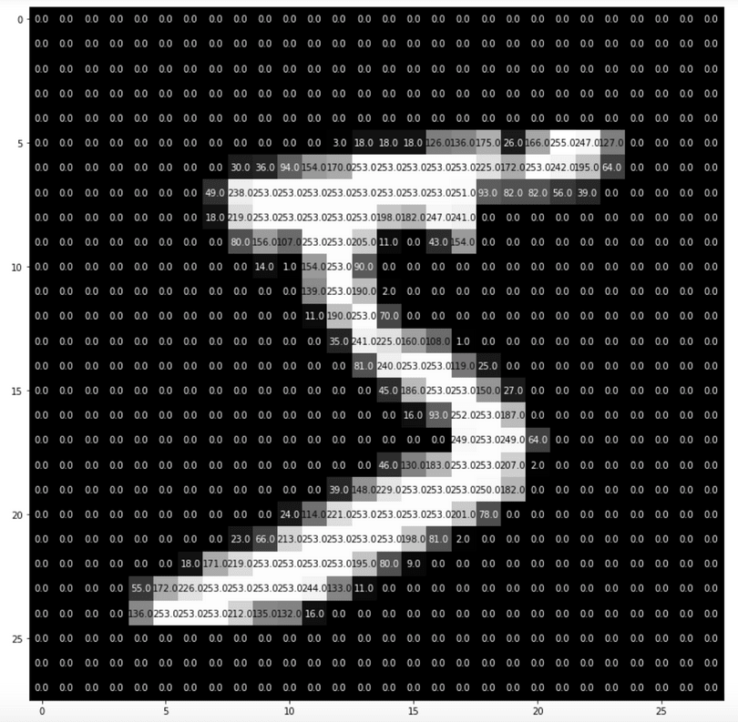
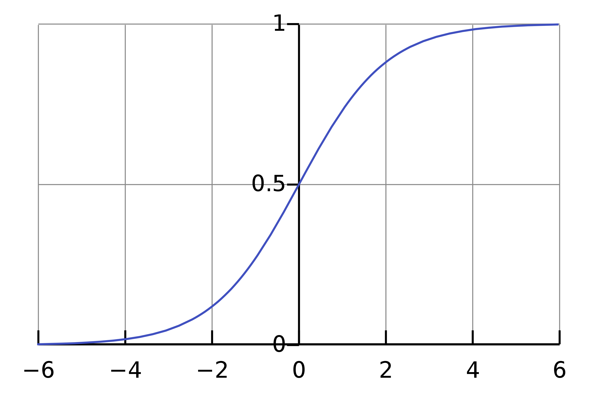

Lecture 13: September 6th, 2023#
Updates:
Extended deadlines for Homework 7 and Homework 8; they are now due Monday.
Project planning worksheet due tonight.
There will be lecture on Monday of Week 6.
Brief fieldtrip to Lecture 12#
The end of lecture 12 had some important concepts surrounding overfitting. I added in some charts after the class, and want to spend a few minutes at the start of this lecture going over them.
Introduction to the MNIST Database#
We have a YouTube video describing this database (and also solving the first two problems from Homework 7), but I’ll spend a bit of lecture time today going over the most important points.

Imagine I asked you to identify the number above. It’s pretty easy for a human to look at it and recognize it as the number 5…but how could you teach a computer to perform this same task? Suddenly, the task no longer seems so easy.
The MNIST (Modified National Institute of Standards and Technology) database is a collection of 70,000 images of handwritten digits.
Each image can be understood as a \(28 \times 28\) grid of pixels, with values ranging between 0 (darkest) and 255 (lightest).
Imagine we lay out the pixels all in one row; from this perspective, each image is a point in 784-dimensional space.
Logistic Regression#
Remember: The point of polynomial regression was to predict a continuous value (think about predicting price of a taxi ride based on the distance traveled.)
Very Confusing: Logistic regression is used for classification problems.
Think of our handwritten digits examples from MNIST Database; recognizing handwritten digits is a classification problem. If this seem confusing, here are some points to consider:
If we’re recognizing digits, we know there are only 10 possible outputs: zero through nine. Even though these numbers have an ordering, it isn’t important for identifying the number. For example, labeling 0 with “The number zero” wouldn’t make a difference.
Imagine I got 4.3 as the output of my model. Would this make sense if I’m trying to predict what digit it is? This type of output doesn’t make sense for classification, but would make sense if I was trying to predict something from regression (like price of a taxi ride).
The Sigmoid Function#
The sigmoid function is very good for getting probabilities. In logistic regression, we don’t predict a class directly, instead we predict the probability of being in that class. In today’s lecture, we’ll do a lot with binary classification; so we’ll be predicting the probability of something being in a class or not in a class.

{kind=link}
Penguins Example#
Using the penguins dataset from Seaborn, fit a logistic regression model to classify whether or not a penguin is in the Chinstrap species, using its flipper length and its bill length.
Basic idea: we’ll ask “what’s the probability of a penguin belonging to the Chinstrap species, given that we know its flipper length and its bill length”.
import numpy as np
import pandas as pd
import altair as alt
import seaborn as sns
df = sns.load_dataset("penguins").dropna()
df.head()
| species | island | bill_length_mm | bill_depth_mm | flipper_length_mm | body_mass_g | sex | |
|---|---|---|---|---|---|---|---|
| 0 | Adelie | Torgersen | 39.1 | 18.7 | 181.0 | 3750.0 | Male |
| 1 | Adelie | Torgersen | 39.5 | 17.4 | 186.0 | 3800.0 | Female |
| 2 | Adelie | Torgersen | 40.3 | 18.0 | 195.0 | 3250.0 | Female |
| 4 | Adelie | Torgersen | 36.7 | 19.3 | 193.0 | 3450.0 | Female |
| 5 | Adelie | Torgersen | 39.3 | 20.6 | 190.0 | 3650.0 | Male |
cols = ["flipper_length_mm","bill_length_mm"]
alt.Chart(df).mark_point(filled=True,size=80).encode(
x = alt.X("flipper_length_mm").scale(zero=False),
y = alt.Y("bill_length_mm").scale(zero=False),
color="species",
shape="species"
)
Just looking at the chart, it seems like there are pretty clear distinctions between the species, with a few outliers.
Remember: for this example, we’re doing binary classification. Our question is “Is the penguin Chinstrap, or not?”
(df["species"] == "Chinstrap").sum()
68
df["species"].shape
(333,)
df["species"]
0 Adelie
1 Adelie
2 Adelie
4 Adelie
5 Adelie
...
338 Gentoo
340 Gentoo
341 Gentoo
342 Gentoo
343 Gentoo
Name: species, Length: 333, dtype: object
In our dataset, there are 333 penguins represented, and we know that 68 of them are Chinstrap.
So our two categories for logistic regression will be “Chinstrap” and “Other”. One benefit of binary classification is that the coefficients are easier to interpret.
Next, we add a column which is True if a penguin belongs to the Chinstrap species, and is False otherwise.
df["is_chinstrap"] = (df["species"] == "Chinstrap")
df.head()
| species | island | bill_length_mm | bill_depth_mm | flipper_length_mm | body_mass_g | sex | is_chinstrap | |
|---|---|---|---|---|---|---|---|---|
| 0 | Adelie | Torgersen | 39.1 | 18.7 | 181.0 | 3750.0 | Male | False |
| 1 | Adelie | Torgersen | 39.5 | 17.4 | 186.0 | 3800.0 | Female | False |
| 2 | Adelie | Torgersen | 40.3 | 18.0 | 195.0 | 3250.0 | Female | False |
| 4 | Adelie | Torgersen | 36.7 | 19.3 | 193.0 | 3450.0 | Female | False |
| 5 | Adelie | Torgersen | 39.3 | 20.6 | 190.0 | 3650.0 | Male | False |
At this point, we’re still preparing our data for logistic regression. Next, we’ll split into a training set and a test set.
from sklearn.model_selection import train_test_split
cols
['flipper_length_mm', 'bill_length_mm']
X_train, X_test, y_train, y_test = train_test_split(df[cols],df["is_chinstrap"],test_size=0.2,random_state=0)
X_test
| flipper_length_mm | bill_length_mm | |
|---|---|---|
| 62 | 185.0 | 37.6 |
| 60 | 185.0 | 35.7 |
| 283 | 231.0 | 54.3 |
| 107 | 190.0 | 38.2 |
| 65 | 192.0 | 41.6 |
| ... | ... | ... |
| 122 | 176.0 | 40.2 |
| 298 | 215.0 | 45.2 |
| 22 | 189.0 | 35.9 |
| 151 | 201.0 | 41.5 |
| 252 | 207.0 | 45.1 |
67 rows × 2 columns
y_test
62 False
60 False
283 False
107 False
65 False
...
122 False
298 False
22 False
151 False
252 False
Name: is_chinstrap, Length: 67, dtype: bool
Notice the indices for X_test and y_test are the same!
We’re finally ready for logistic regression! We follow our usual workflow of import > instantiate > fit > predict
from sklearn.linear_model import LogisticRegression
#clf to remind us of classification
clf = LogisticRegression()
clf.fit(X_train,y_train)
LogisticRegression()In a Jupyter environment, please rerun this cell to show the HTML representation or trust the notebook.
On GitHub, the HTML representation is unable to render, please try loading this page with nbviewer.org.
LogisticRegression()
clf.predict(X_test)
array([False, False, False, False, False, False, True, False, False,
True, False, False, False, True, False, False, False, False,
True, False, False, False, False, False, False, False, False,
False, False, False, False, True, False, False, False, False,
True, False, True, False, False, False, False, False, False,
False, False, False, False, False, False, False, False, False,
False, False, False, False, False, False, False, False, True,
False, False, False, False])
#predictions on X_test
clf.predict(X_test).shape
(67,)
#Actual values
y_test
62 False
60 False
283 False
107 False
65 False
...
122 False
298 False
22 False
151 False
252 False
Name: is_chinstrap, Length: 67, dtype: bool
Now we want to ask how well did our model do?
(y_test == clf.predict(X_test)).mean()
0.9402985074626866
This is saying that we got 94.03% accuracy. Not too bad, huh?
Instead of computing the accuracy by hand, there’s a much faster way to get this number using the score method.
clf.score(X_test,y_test)
0.9402985074626866
This is saying that about 94% of the time, our model was able to correctly predict whether or not a penguin belonged to the chinstrap species.
Accuracy on the test set is pretty high, so we don’t need to worry too much about overfitting. But, just to be safe, let’s check how the model does on the train set to see if it does much better.
clf.score(X_train,y_train)
0.9624060150375939
Great question from the chat: in general, including more training data will cause our accuracy to go up.
Interpreting Coefficients#
We’re still dealing with the same question from before: what is the probability a penguin is Chinstrap, given we know its bill length and flipper length.
The “learning” in “machine learning” for logistic regression comes down to finding the following coefficients and intercept (bias).
clf.coef_
array([[-0.38263519, 1.17201067]])
flip_coef, bill_coef = clf.coef_[0]
cols
['flipper_length_mm', 'bill_length_mm']
flip_coef
-0.38263519321416745
bill_coef
1.1720106733426907
clf.intercept_
array([20.93321887])
We already saw that the sigmoid function is very natural for modeling probability.
sigmoid = lambda x: 1/(1 + np.exp(-x))
sigmoid(0)
0.5
sigmoid(10)
0.9999546021312976
The larger the input, the closer the function is to 1.
Motivating Question: What does our model predict if the flipper has length 200mm and the bill has length 50mm?
flip = 200
bill = 50
Here is the value that we want to put into the sigmoid function. Because the next equation is linear, that’s why the logistic regression is considered a linear model.
flip_coef*flip + bill_coef*bill + clf.intercept_
array([3.00671389])
Now, we put this number into the sigmoid function.
sigmoid(flip_coef*flip + bill_coef*bill + clf.intercept_)
array([0.95287652])
Our model would predict with 95% chance that the penguin is Chinstrap.
Do we get the same thing using clf.predict?
#this will give an error
clf.predict([flip,bill])
/Users/yasmeen/opt/miniconda3/envs/math9/lib/python3.9/site-packages/sklearn/base.py:464: UserWarning: X does not have valid feature names, but LogisticRegression was fitted with feature names
warnings.warn(
---------------------------------------------------------------------------
ValueError Traceback (most recent call last)
Input In [36], in <cell line: 2>()
1 #this will give an error
----> 2 clf.predict([flip,bill])
File ~/opt/miniconda3/envs/math9/lib/python3.9/site-packages/sklearn/linear_model/_base.py:451, in LinearClassifierMixin.predict(self, X)
437 """
438 Predict class labels for samples in X.
439
(...)
448 Vector containing the class labels for each sample.
449 """
450 xp, _ = get_namespace(X)
--> 451 scores = self.decision_function(X)
452 if len(scores.shape) == 1:
453 indices = xp.astype(scores > 0, int)
File ~/opt/miniconda3/envs/math9/lib/python3.9/site-packages/sklearn/linear_model/_base.py:432, in LinearClassifierMixin.decision_function(self, X)
429 check_is_fitted(self)
430 xp, _ = get_namespace(X)
--> 432 X = self._validate_data(X, accept_sparse="csr", reset=False)
433 scores = safe_sparse_dot(X, self.coef_.T, dense_output=True) + self.intercept_
434 return xp.reshape(scores, (-1,)) if scores.shape[1] == 1 else scores
File ~/opt/miniconda3/envs/math9/lib/python3.9/site-packages/sklearn/base.py:604, in BaseEstimator._validate_data(self, X, y, reset, validate_separately, cast_to_ndarray, **check_params)
602 out = X, y
603 elif not no_val_X and no_val_y:
--> 604 out = check_array(X, input_name="X", **check_params)
605 elif no_val_X and not no_val_y:
606 out = _check_y(y, **check_params)
File ~/opt/miniconda3/envs/math9/lib/python3.9/site-packages/sklearn/utils/validation.py:940, in check_array(array, accept_sparse, accept_large_sparse, dtype, order, copy, force_all_finite, ensure_2d, allow_nd, ensure_min_samples, ensure_min_features, estimator, input_name)
938 # If input is 1D raise error
939 if array.ndim == 1:
--> 940 raise ValueError(
941 "Expected 2D array, got 1D array instead:\narray={}.\n"
942 "Reshape your data either using array.reshape(-1, 1) if "
943 "your data has a single feature or array.reshape(1, -1) "
944 "if it contains a single sample.".format(array)
945 )
947 if dtype_numeric and hasattr(array.dtype, "kind") and array.dtype.kind in "USV":
948 raise ValueError(
949 "dtype='numeric' is not compatible with arrays of bytes/strings."
950 "Convert your data to numeric values explicitly instead."
951 )
ValueError: Expected 2D array, got 1D array instead:
array=[200 50].
Reshape your data either using array.reshape(-1, 1) if your data has a single feature or array.reshape(1, -1) if it contains a single sample.
#easy fix
clf.predict([[flip,bill]])
/Users/yasmeen/opt/miniconda3/envs/math9/lib/python3.9/site-packages/sklearn/base.py:464: UserWarning: X does not have valid feature names, but LogisticRegression was fitted with feature names
warnings.warn(
array([ True])
Here, our model predicts that the hypothetical penguin belongs to the Chinstrap species. What if we actually wanted to see the probability?
clf.predict_proba([[flip,bill]])
/Users/yasmeen/opt/miniconda3/envs/math9/lib/python3.9/site-packages/sklearn/base.py:464: UserWarning: X does not have valid feature names, but LogisticRegression was fitted with feature names
warnings.warn(
array([[0.04712348, 0.95287652]])
Here’s how to interpret these results:
With 4.7% chance, the penguin is not Chinstrap
With about 95.3% chance, the penguin is Chinstrap
Predicting if a penguin is in the chinstrap species (decision boundaries)#
Same setup as before, now we answer the following question.
Using the model, describe all flipper lengths and bill lengths for which our model thinks there is an 80% chance the penguin is Chinstrap. Give your answer as a formula for bill length in terms of flipper length.
Next, I’ll redefine some variables, just to keep things consistent with my notes.
cols
['flipper_length_mm', 'bill_length_mm']
fcoef, bcoef = clf.coef_[0]
For a given fillper length, what value of bill length gives 80% confidence? This comes down to solving the following equation.
Now, let’s write a function that solves for bill length in terms of flipper length.
bill80 = lambda flength: 1/(bcoef)*((-1)*np.log((1/0.8)-1)-clf.intercept_[0] - fcoef*flength)
I’m now going to define a function bill50 similarly.
bill50 = lambda flength: 1/(bcoef)*((-1)*np.log((1/0.5)-1)-clf.intercept_[0] - fcoef*flength)
Now, let’s test out our function! Remember, as input, we pass a flipper length, and as output we get a bill length leads to a certain amount of confidence.
bill80(200)
48.61740206772054
Interpretation: This is saying that if we have a penguin with a flipper length of 200mm, then a bill length of 48.6mm leads our model to have 80% confidence that the penguin is a Chinstrap penguin.
Next, we add 80% and 50% values to our DataFrame.
#add a column representing boundary for 80% confidence
df["bdry80"] = df["flipper_length_mm"].map(bill80)
df["bdry50"] = df["flipper_length_mm"].map(bill50)
df["pred"] = clf.predict(df[cols])
df.sample(10)
| species | island | bill_length_mm | bill_depth_mm | flipper_length_mm | body_mass_g | sex | is_chinstrap | bdry80 | bdry50 | pred | |
|---|---|---|---|---|---|---|---|---|---|---|---|
| 206 | Chinstrap | Dream | 42.5 | 17.3 | 187.0 | 3350.0 | Female | True | 44.373194 | 43.190359 | False |
| 208 | Chinstrap | Dream | 45.2 | 16.6 | 191.0 | 3250.0 | Female | True | 45.679104 | 44.496270 | True |
| 282 | Gentoo | Biscoe | 45.7 | 13.9 | 214.0 | 4400.0 | Female | False | 53.188088 | 52.005254 | False |
| 55 | Adelie | Biscoe | 41.4 | 18.6 | 191.0 | 3700.0 | Male | False | 45.679104 | 44.496270 | False |
| 335 | Gentoo | Biscoe | 55.1 | 16.0 | 230.0 | 5850.0 | Male | False | 58.411729 | 57.228895 | False |
| 250 | Gentoo | Biscoe | 47.3 | 15.3 | 222.0 | 5250.0 | Male | False | 55.799909 | 54.617074 | False |
| 264 | Gentoo | Biscoe | 50.5 | 15.9 | 222.0 | 5550.0 | Male | False | 55.799909 | 54.617074 | False |
| 35 | Adelie | Dream | 39.2 | 21.1 | 196.0 | 4150.0 | Male | False | 47.311492 | 46.128658 | False |
| 320 | Gentoo | Biscoe | 48.5 | 15.0 | 219.0 | 4850.0 | Female | False | 54.820476 | 53.637642 | False |
| 106 | Adelie | Biscoe | 38.6 | 17.2 | 199.0 | 3750.0 | Female | False | 48.290925 | 47.108090 | False |
Row 174 actually looks like a really interesting edge case. Let’s come back to it when we have our plots.
Now, we’ll start a series of plots that will pull everything together.
#same base chart from before
c = alt.Chart(df).mark_point(filled=True,size=80).encode(
x=alt.X("flipper_length_mm").scale(zero=False),
y=alt.Y("bill_length_mm").scale(zero=False),
color="pred",
shape="species"
)
c
#Just a line right now, nothing too special until we see the charts all together
c80 = alt.Chart(df).mark_line(color="red").encode(
x=alt.X("flipper_length_mm").scale(zero=False),
y=alt.Y("bdry80").scale(zero=False)
)
c80
c50 = alt.Chart(df).mark_line(color="black").encode(
x=alt.X("flipper_length_mm").scale(zero=False),
y=alt.Y("bdry50").scale(zero=False)
)
c50
c + c80 + c50
Note: At the end of lecture we updated color to show the preditions! Notice that the color is showing us where the decision boundary is.
The cool thing about this picture, is it is telling us how the model makes decisions.
Observations:
Recall the red (top) line represents our model having 80% confidence based on flipper length. So, any penguin above this line has > 80% chance of being a Chinstrap penguin according to our model.
Between the two lines, there is between a 50% and 80% chance of being a Chinstrap penguin.
The black (bottom) line is very important! It is called the decision boundary. Recall that it represent 50% confidence that a penguin belongs to the Chinstrap species. Anything above the bottom line gets classified by our model as being a Chinstrap penguin, while everything below it gets classifed as other.
Notice that the decision boundary is a line! This is part of the reason why logistic regression is considered a linear model (remember, we’re finding coefficients of a linear function, even if the probability function itself is not linear).
![Created in deepnote.com]() Created in Deepnote
Created in Deepnote